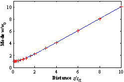

The beam propagation, i.e., the evolution of the laser mode
where
For large distances z >> 1, this leads to a far-field divergence of
Similarly, the wave front radius of curvature evolves according to
The propagation of a non-perfect fundamental Gaussian beam can be described using the beam propagation factor
The propagation of a beam with beam propagation factor
For laser resonators, deriving the resonant mode using the ABCD self-consistency argument yields the embedded Gaussian mode.
From the definition of the Rayleigh length, that the mode
LaserCanvas includes the
is used directly when calculating mode sizes.
The beam evolution from one optic to the next is performed by calculating the q parameter using the optic and space ABCD matrices.
The spot sizes reported by the  Measurement
Measurement
For painting, the mode evolution can be divided into near-field and far-field. In the near field, the mode exhibits a characteristic curving, approaching the far-field asymptote.
To minimise the number of drawing cycles required, LaserCanvas scales a tabulated near-field mode evolution up to a distance of
